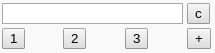

À toi de jouer 1.1 :
Modifier le code HTML ci-dessous, afin d'avoir le rendu interface 2 suivant :
Interface 2

Le code HTML ci-dessous, permet de réaliser l'interface 1 à l'aide d'un tableau :
<html> <html> <head> </head> <body> <table> <tr> <td colspan="3"><input id="output"></td> <td><button>c</button></td> </tr> <tr> <td><button >1</button></td> <td><button >2</button></td> <td><button >3</button></td> <td><button >+</button></td> </tr> </table> </body> </html>

Modifier le code HTML ci-dessous, afin d'avoir le rendu interface 2 suivant :
Interface 2
Afficher les bordures des cellules avec l'attribut border , d'une valeur de "1", placé dans la balise <table>.
Le résultat attendu :
Interface 3

<script> //fonction qui affiche la valeur function afficher(val) { document.getElementById("output").value+=val; } </script>
Rajouter le gestionnaire l'évènement onclick sur l'élément button du chiffre 1. L'événement saisi bouton 1, déclenche la fonction afficher()
<td><button onclick="afficher()">1</button></td>
À l'exception du bouton c, rajouter aux autres boutons l'événement onclick, afin d'afficher leurs valeurs respectives.
Le rendu doit être le suivant : lorsque je clique sur un bouton, sa valeur apparaît sur le formulaire d'affichage. (Tester par vous-même)<script> //fonction qui efface l'écran function effacer() { document.getElementById("output").value = ""; } </script>

Rajouter l'évènement onclick sur l'élément button c (clear).
<td><button onclick="effacer()">c</button></td>
Le rendu doit être le suivant : lorsqu'on clique sur le bouton c, efface le contenu afficher dans le formulaire s'efface. (Tester par vous-même)
<script> //La fonction eval() permet d'évaluer du code JavaScript représenté sous forme d'une chaîne de caractères. function calculer() { let a = document.getElementById("output").value; let b = eval(a); document.getElementById("output").value = b; } </script>
Dès le chargement de la page, il est possible d'afficher un message dans un popup.
Pour cela, il vous suffit de rajouter l’attribut onload dans la balise <body>.
onload = intro()
Faire afficher, dès le chargement de votre page, un message (d'introduction par exemple).
<script> //La fonction intro() affiche un message dans une boîte de dialogue function intro() { alert("Message d'introduction"); } </script>

onfocus modifie la couleur d'arrière-plan d'un champ de saisie lorsqu'il obtient le focus.
Pour cela, il vous suffit de rajouter l’attribut onfocus dans la balise <input>.
onfocus="couleur(this)"
À toi de jouer 4 .1 :
Modifier avec la fonction couleur(), en 'bleu', la couleur de l'arrière-plan du formulaire d'affichage des résultats (ou de saisie des opérations).
<script>
//fonction qui modifie la couleur de fond du formulaire
function couleur(x) {
x.style.background = "couleur_désirée";
}
</script>
Le résultat attendu :

<script>
//fonction qui affiche un message si on utilise une touche clavier
function evenement_clavier()
{
alert("Tu as appuyer sur une touche clavier ");
}
</script>
Modifier l'attribut du 5.1 par onkeyup et déduisez l'événement JavasCript induit.
<script>
//fonction qui modifie la couleur d'un bouton lorsqu'on le survol
function couleur_bouton1(x)
{
x.style.background = "#B8D7F5";
}
</script>
Le résultat attendu : Survoler avec la souris le bouton 1
<button onclick="fonction1(); fonction2(); fonction3()">
<iframe src="https://trinket.io/embed/html/5f07af471c?runMode=autorun" width="100%" height="356" frameborder="0" marginwidth="0" marginheight="0" allowfullscreen></iframe>